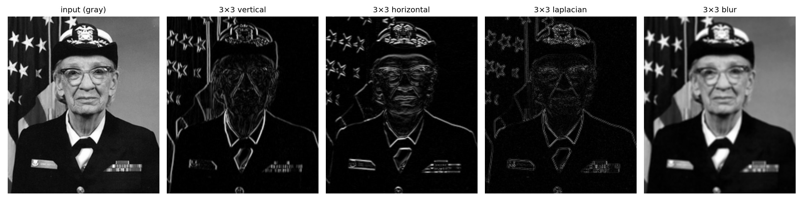
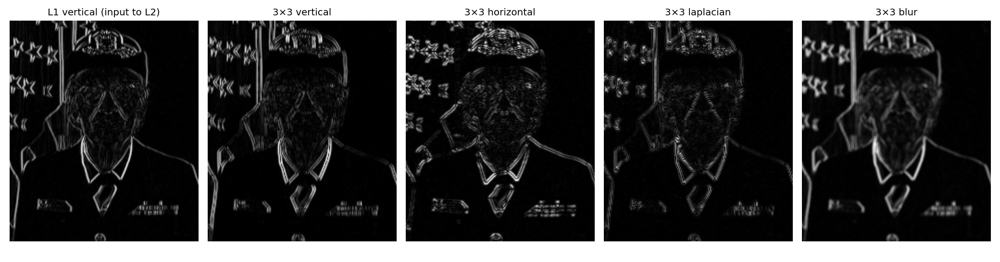
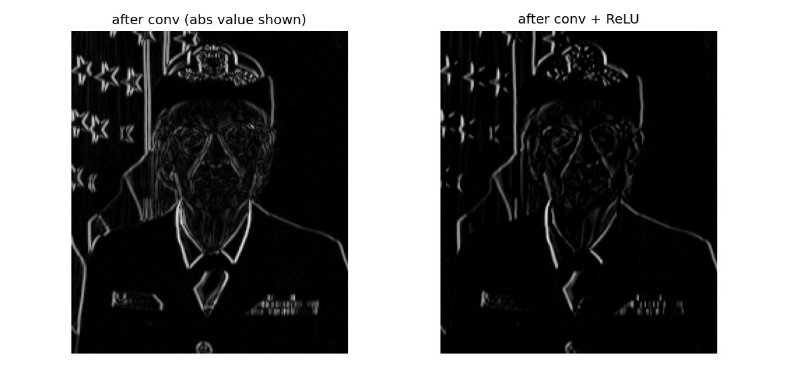

用一张真实人脸照片，手写 2D 卷积，一层一层看下去。 卷积核不是黑箱，它就是一组数字，拿来和图像的一小块逐项相乘再相加。
从人脸照片里截一块 5×5 的灰度像素（数值 0–255，越大越亮）：
拿一个 3×3 的垂直边缘核盖在左上角：
九个乘积全部加起来：
−107 + 0 + 106 − 218 + 0 + 222 − 113 + 0 + 103 = −7
这九个格子的结果，就是输出特征图上的一个数：−7。
然后把窗口往右挪一格，重复。滑完整个 5×5，3×3 的核会得到 3×3 = 9 个数：
这个核左边是负的、右边是正的，所以它算的是「右边比左边亮多少」。 竖直方向的亮度变化越大，输出越大。这就是它在找垂直边缘的原因。
你昨天学的 MLP 一层是 z = W·x + b。卷积层也是这个形式，只是 W 长得很特殊。用一个小例子看它怎么摊开。
输入 3×3，核 2×2：
核在 3×3 上滑，一共 4 个位置。每个位置盖住的 4 个数拉成一横行：
| 位置 | 四个数 | × 核 [1, 0, 0, −1] | 结果 |
|---|---|---|---|
| 左上 (0,0) | 1, 2, 4, 9 | 1·1 + 2·0 + 4·0 + 9·(−1) | −8 |
| 右上 (0,1) | 2, 3, 9, 6 | 2·1 + 3·0 + 9·0 + 6·(−1) | −4 |
| 左下 (1,0) | 4, 9, 7, 8 | 4·1 + 9·0 + 7·0 + 8·(−1) | −4 |
| 右下 (1,1) | 9, 6, 8, 5 | 9·1 + 6·0 + 8·0 + 5·(−1) | +4 |
写成矩阵乘法就是：
┌ 1 2 4 9 ┐ ┌ 1 ┐ ┌ −8 ┐
│ 2 3 9 6 │ · │ 0 │ = │ −4 │
│ 4 9 7 8 │ │ 0 │ │ −4 │
└ 9 6 8 5 ┘ └ −1 ┘ └ 4 ┘
↑ ↑ ↑
4 个位置 同一个核 4 个输出
这就是「展开」（im2col）。卷积 = 把每块拉平排成矩阵，再乘一个列向量。形式上跟 MLP 的 W·x 一模一样。
区别在于：MLP 的每一行 W 都不一样，卷积的 4 行乘的是同一个列向量。 这个「重复使用」就是权重共享（weight sharing）。
所以卷积层没有新的数学。它只是把你的权重矩阵变成了一个「大量重复、大量为 0」的特殊矩阵。
反向传播的公式原样适用，这也是为什么 PyTorch 里 nn.Conv2d 也能直接 backward()。
同一个卷积层的四个核，对同一张照片各扫一遍：

算左右亮度差。旗杆、衣领、脸的两侧会亮。
算上下亮度差。帽檐、肩章、条纹会亮。
中心减四周。任何方向的突变都亮，所以是完整轮廓。
九宫格取平均。去掉细节，保留大致明暗。
这四个核是人工指定的经典算子。真实 CNN 里这些数字是训练出来的， 但训练出来的核长得很像它们——底层学的永远是对边缘、颜色、纹理的响应。
把第一层的垂直边缘图当作输入，再拿四个核扫一遍：

层数加深，特征变抽象。
第一层看到的是「一条竖线」。
第二层看到的是「一组竖线怎么排列」——也就是形状的雏形。
再往下的层会看到「眼睛」「轮子」这类完整部件，最后才是「人」。
每一层都在对上一层的输出再做一次卷积，就像把一句话拆成词、再把词拆成字母。
注意第二层的输出比第一层更小：每次 3×3 卷积都会让宽高各减 2。 真实网络靠 padding（边缘补零）保持尺寸，或者故意用池化（pooling）来缩小。
卷积的结果有正有负。左边两个都显示（取绝对值），右边只留正值：

ReLU 会丢掉大约一半的边缘信息——因为一个核只能响应一个方向的突变（左边比右边亮，或反过来），另一半是负值。
但这不是问题。 一个卷积层通常有几十个核，方向互补：垂直核丢掉的部分，正好由「反向垂直核」拿回来。多个核叠起来，信息没丢。
同一张 200×234 的灰度图，两种做法对比：
| 做法 | 参数个数 | 说明 |
|---|---|---|
| 全连接（MLP） | 46,800 × 层宽 | 每个像素都要连到每个神经元 |
| 一个 3×3 卷积核 | 10 | 9 个权重 + 1 个偏置 |
| 四个 3×3 卷积核 | 40 | 每个核一套，共 4 套 |
为什么能省这么多：
| 设计 | 作用 |
|---|---|
| 局部连接 | 每个输出只看 3×3 一小块，不是看全部 46,800 个像素 |
| 权重共享 | 同一个核在整张图上滑，用同一组 9 个数 |
代价是：一个核只能识别同一种模式，不管它出现在哪里。 要识别多种模式，就得多加几个核（通道数）。
CNN 处理的是网格。交通数据也能排成网格：
一个 3×3 的核在这上面滑，同时看「连续 3 个时刻」和「连续 3 个路段」。这就是 CNN 进交通预测的入口。
但要提醒一件事：路网不是整齐的网格，是拓扑图——路口之间有的连、有的不连，间距也不一样。所以交通领域主流用的是 GNN（Graph Neural Network，图神经网络），不是 CNN。
CNN 在交通里更多用在时间维度（1D 卷积提取连续时刻的模式），或者数据本身就是规则网格的场景（比如把城市切成方格统计流量）。
下一步往下走是 GNN，但那是另一套数学。先把卷积吃透，GNN 里的「图卷积」会是它的推广。